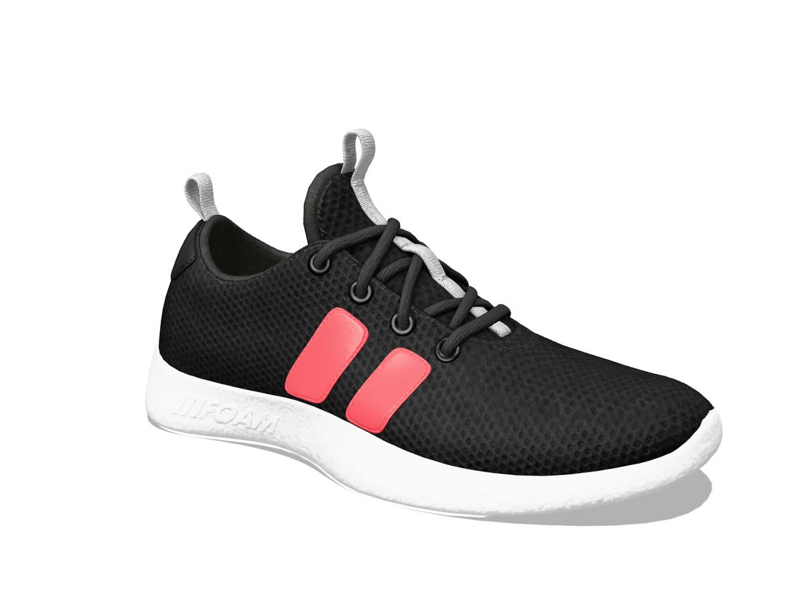
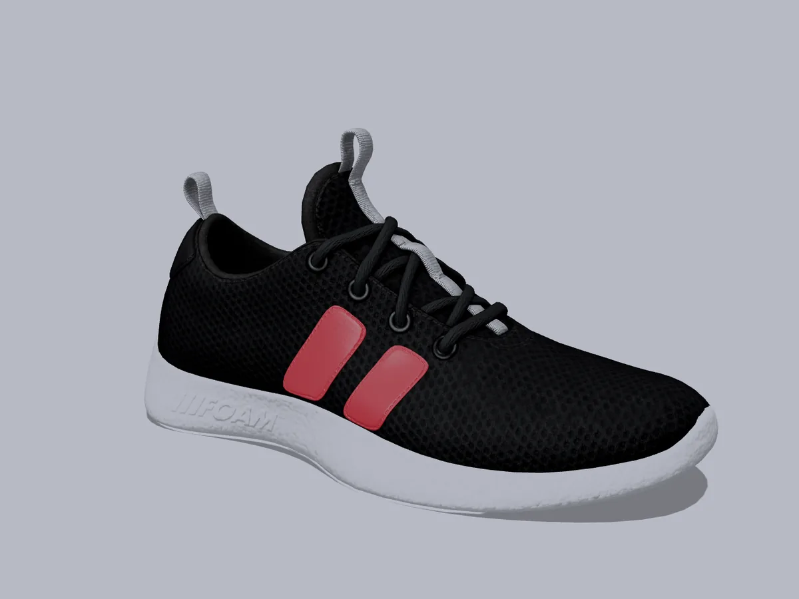
CASE 01
黒い靴の「黒つぶれ」
露出不足で背景はグレーに。アッパーの黒がつぶれ、メッシュの質感が見えない状態でした。
- 背景をRGB 255の白へ
- 黒の締まりを残したまま、シャドウを起こして素材感を復元
- 差し色のピンクを実物の発色に
靴メーカー・靴ブランド向けAI色補正サービス
クロマフィックスは、AIを最大限に活用した靴専門の色補正サービスです。 月額25万円（税別）の定額制で、社内で担当者を抱えるよりも大幅に低いコストのまま、商品画像を実物どおりの色に仕上げます。 写真を描き直さず「色だけを直すAI」だから、形が歪む心配もありません。
※社内で色補正の担当者1名（手取り月35万円）を雇用している場合と比較した試算です。
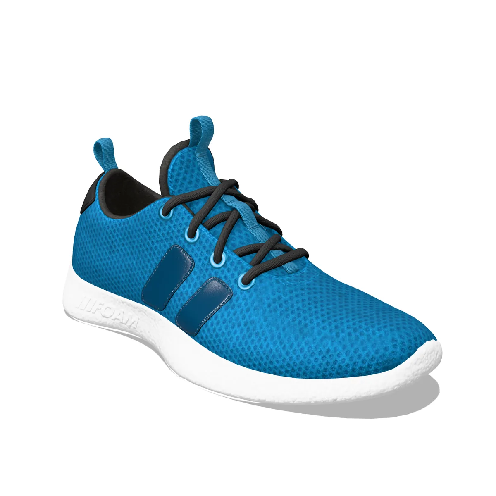
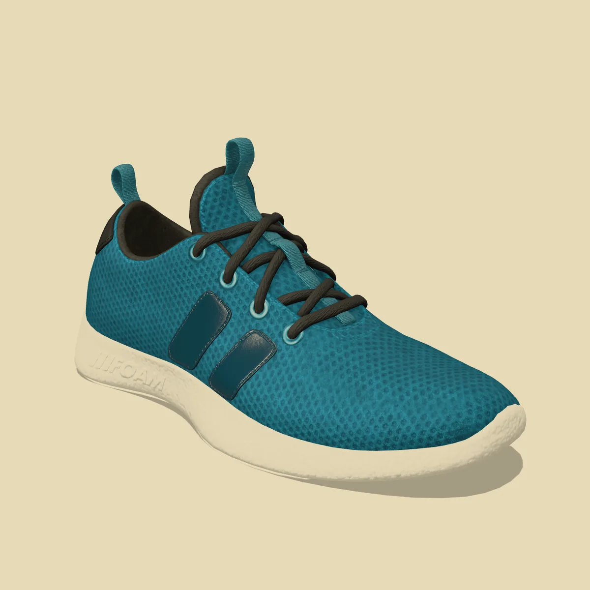
SAMPLE形はそのまま、色だけを補正
WE CORRECT
PROBLEMこんな課題はありませんか
色補正のために、担当者の人件費が毎月かかり続けている
担当者が休んだり辞めたりすると、商品画像の更新が止まってしまう
新作やカラバリが重なる時期は、補正が追いつかない
仕上がりの基準が担当者の感覚頼みで、ほかの人に引き継げない
同業他社はAIで効率化していると聞くが、現場は「AIだと歪む」と慎重
「画像と色が違う」というレビューや返品がなくならない
色補正は、もう
社内で抱えなくていい。
AIを最大限に活用したクロマフィックスなら、品質はそのままに、コストも属人化も手放せます。
01 — COSTコスト比較
社員の人件費は、手取り額だけではありません。本人が負担する税金・社会保険料に、会社が負担する社会保険料を加えると、 実際にかかっている金額は手取りのおよそ1.5倍。色補正の担当者を1名置くだけで、年間600万円を超えることもあります。
年間のコスト
差額 年間 約322万円 の削減
※手取りから逆算した目安の概算です。賞与・通勤手当、PC・画像編集ソフト・モニターなどの設備費、採用・教育の費用は含みません。ChromaFixの料金は税別で比較しています。
ChromaFixの料金
月額25万円（税別）
定額制。初回3枚の無料トライアルで、仕上がりを確かめてからご契約いただけます。
社内で担当者を雇用する場合と比べて
年間100万円以上の
コスト削減※
※手取り月35万円の担当者1名との比較。手取り額だけで比べても年120万円、会社負担の人件費で比べると年間約320万円の差になります。
担当者の休みや退職で、画像の更新が止まる心配もなくなります。
無料トライアルを申し込む02 — AIAI補正のしくみ
AIで靴の形が歪んだり、ロゴが崩れたりするのは、画像をまるごと“描き直す”タイプの生成AIを使った場合です。 クロマフィックスのAIは、写真を描き直しません。ピクセルの位置はそのままに、色の値だけを補正します。
01
調整するのは色だけ。靴の形・ロゴ・ステッチ・素材の凹凸には一切手を加えないため、形が変わることはありません。
02
アッパー、オーバーレイ、ソール、背景などをAIが自動で切り分け、素材ごとに最適な補正をかけます。
03
現物サンプルや既存の画像から基準色を決め、すべての画像をその基準で仕上げます。担当者の感覚に頼りません。
04
AIが補正した画像は、色補正の専門スタッフが確認してから納品。AIの効率と人の目の確かさを両立します。
| 項目 | 画像を描き直す 生成AI | ChromaFix |
|---|---|---|
| 靴の形 | 変わることがある | 変わらない |
| ロゴ・文字・ステッチ | 崩れることがある | そのまま |
| 色の基準 | 指示のたびにばらつく | ブランドの基準色で統一 |
| 仕上がりの確認 | 自社で行う | 専門スタッフが確認 |
現場の担当者の方にも、実際の仕上がりで判断していただけます。
無料トライアルを申し込む03 — CASES補正事例
画像の上をドラッグ（スワイプ）して見比べてください。靴の形やロゴには手を加えず、色だけを補正しています。


CASE 01
露出不足で背景はグレーに。アッパーの黒がつぶれ、メッシュの質感が見えない状態でした。
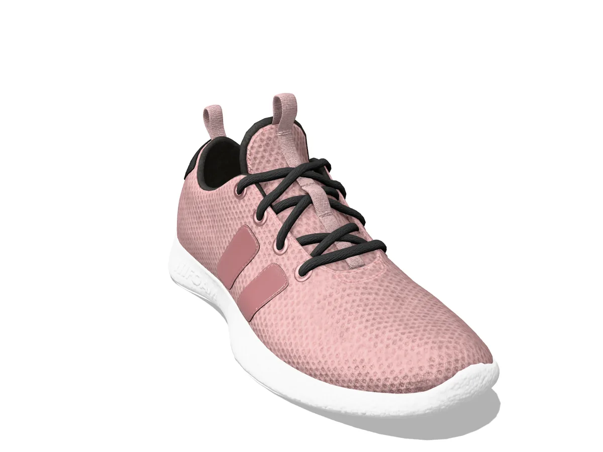
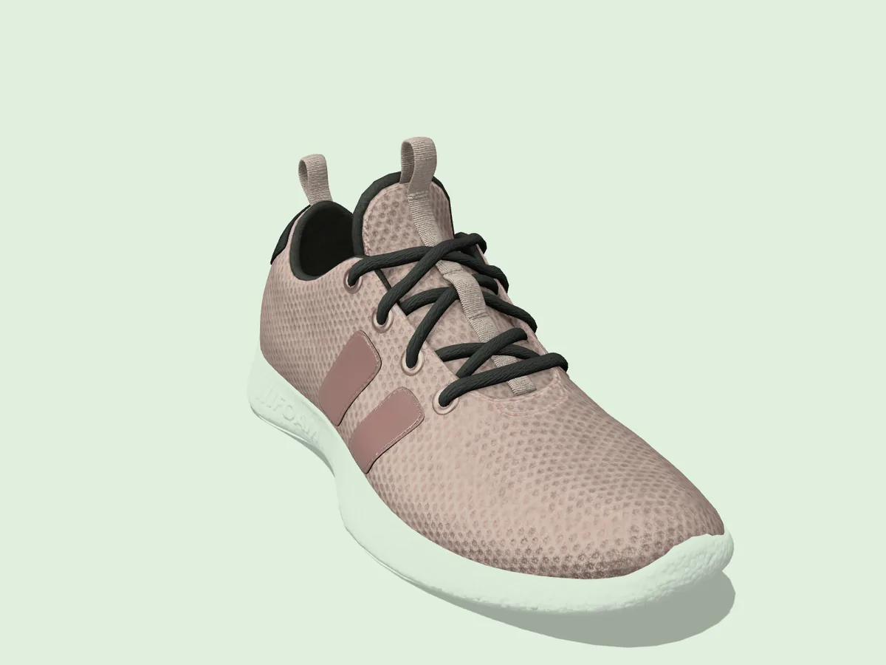
CASE 02
蛍光灯の緑かぶりで、淡いピンクがくすんだベージュに。ソールや背景も緑がかっていました。
CASE 03
3色を別々の日・別々の場所で撮影。一覧ページに並べると、明るさも白の色もバラバラでした。
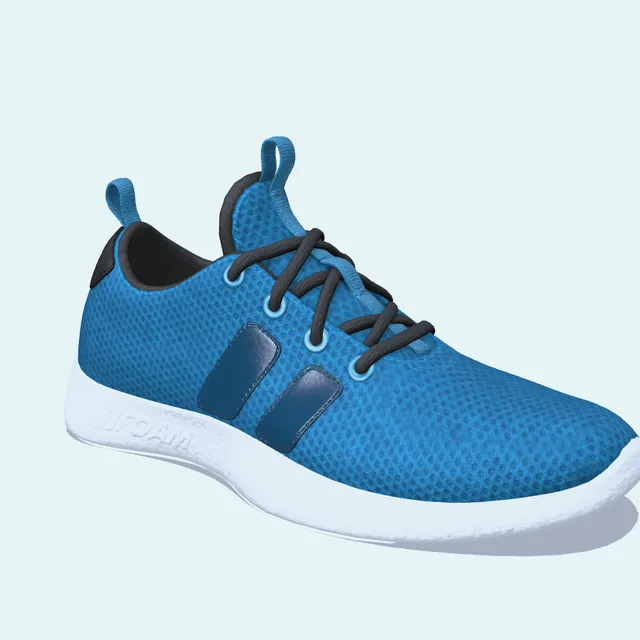
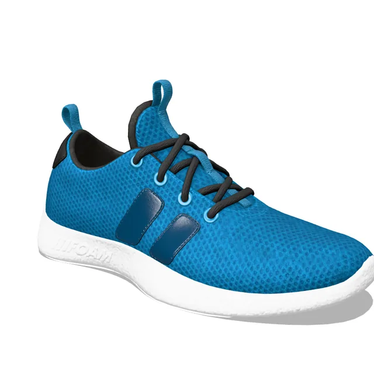
RUNNER LITE
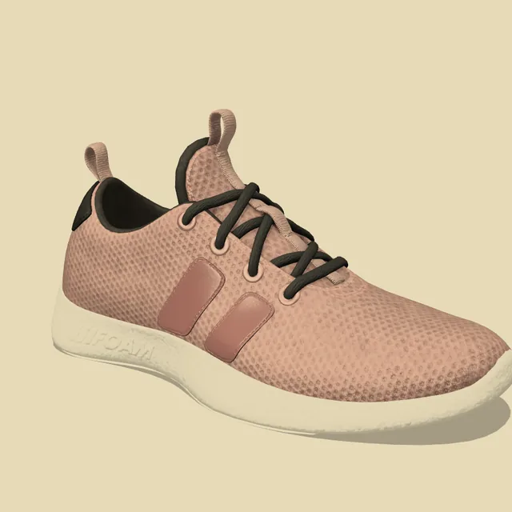
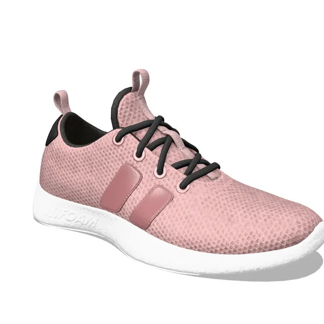
RUNNER LITE
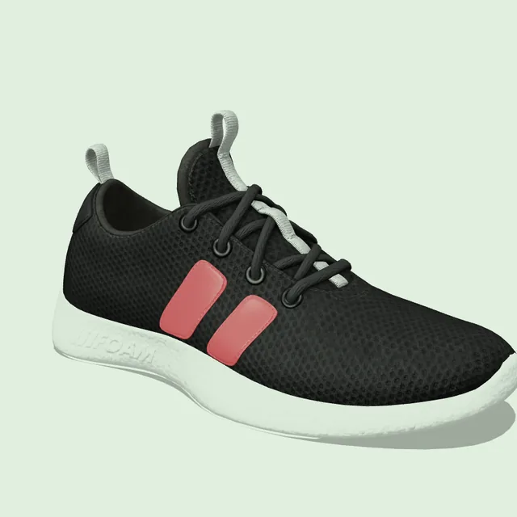
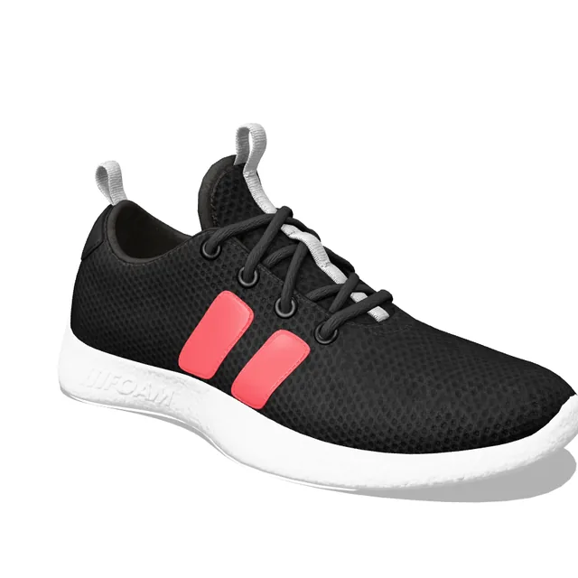
RUNNER LITE
※掲載している画像は、補正内容をご説明するためのサンプルです。商品名・価格は架空のものです。
04 — WHY SHOES靴専門の理由
靴は、商品画像のなかでも色補正が難しいジャンルです。アッパー、オーバーレイ、ライニング、ソール。 素材が違えば、光の反射も、色の転び方もまったく違います。画像全体に同じ補正をかけると、どこかのパーツが必ず不自然になる。 だからクロマフィックスは、靴のパーツごとに範囲を切り分けて、ひとつずつ実物の色へ合わせます。
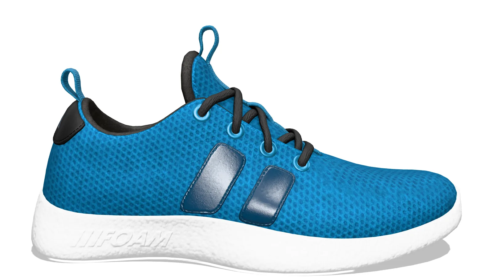
編み目の陰影は残したまま、色かぶりだけを取り除いて生地本来の色へ。
艶のハイライトを飛ばさず、ネイビーの深みを再現します。
黒を「真っ黒」にせず、撚りの立体感が見える締まりに。
暗部に埋もれやすいパーツも、ディテールを起こして見せます。
黄ばみやグレーかぶりを取り、素材そのものの白に。
RGB 255の純白に。モールの画像規定にもそのまま対応します。
艶やシワの陰影を残したまま、染料の深みを再現。テカリによる白飛びも抑えます。
光の向きで明るさが変わる起毛素材。毛並みの陰影を活かしながら、実物の色に合わせます。
強い映り込みを整理して、鏡面の艶と本来の色を両立させます。
細かな編み目のモアレや色にじみを抑え、素材感をクリアに見せます。
ホワイト、オフホワイト、生成り。近い色の違いを取り違えずに描き分けます。
黄ばんで見えやすい白ソールや、ガムソールの飴色を正確に再現します。
05 — FLOWご依頼の流れ
STEP 01
フォームから、商品のジャンルと月あたりのおおよその枚数をお知らせください。
STEP 02
実際の商品画像を3枚まで無料で補正。担当者の方と一緒に仕上がりをご確認ください。
STEP 03
月あたりの枚数と作業内容をうかがい、ご契約内容を決めます。
STEP 04
現物サンプルや既存の画像をもとに、ブランドの基準色を決めます。
STEP 05
画像をお送りいただくだけ。補正済みの画像を納品します。
06 — FAQよくあるご質問
歪みません。クロマフィックスのAIは画像を描き直すのではなく、色の値だけを補正します。形・ロゴ・ステッチの位置は元の写真のままです。補正後の画像は専門スタッフが確認してから納品します。
無料トライアルで、現在の仕上がりと見比べてご判断ください。既存の画像や現物サンプルをもとにブランドの基準色をすり合わせ、その基準ですべての画像を仕上げます。
月額25万円（税別）の定額制です。社内で担当者1名（手取り月35万円）が色補正を行っている場合と比べて、年間100万円以上のコスト削減になります。月あたりの枚数や作業内容については、お問い合わせの際にご相談ください。
初めてのお客様に限り、実際の商品画像を3枚まで無料で補正します。仕上がりをご確認いただいてから、ご契約をご検討ください。
通常は2〜3営業日で納品します。お急ぎの場合は特急対応（最短12時間）も可能です。新作の発売時期など、枚数が多い場合はスケジュールをご相談ください。
はい。現物サンプルをお預かりし、実物を確認しながら基準色を決めます。お預かりした商品は、確認後にご返送します。
JPEG・PNG・TIFF・PSDのほか、各社カメラのRAWデータにも対応しています。納品時の形式・サイズ・ファイル名のルールもご指定いただけます。
秘密保持契約（NDA）の締結に対応しています。お預かりした画像データは、納品後一定期間を経て削除します。
CONTACTお問い合わせ
実際の商品画像で、仕上がりをご確認いただけます。担当者の方と一緒にご判断ください。お見積りやご相談だけでも、お気軽にどうぞ。原則1営業日以内にご返信します。
トライアル用の画像は、ご返信の際にご案内する方法でお送りください。